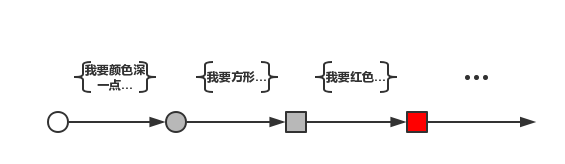

命令式编程与声明式编程
在介绍反应式编程之前，我们先简单了解下命令式编程（Imperative Programming）与声明式编程（Declarative Programming）。我们现在写的代码大多都是命令式编程，也就是说一步一步告诉机器怎么做，而声明式编程是告诉程序我期望一个什么样的结果，而不关心具体是怎么实现的。
代码示例-1
// 命令式编程
boolean contaion = false;
int[] dataArr = {1, 2, 3, 4, 5};
for (int data : dataArr) {
if (data == 3) {
contaion = true;
break;
}
}
System.out.println(contaion);
// 声明式编程
contaion = Stream.of(dataArr).anyMatch(data -> ArrayUtils.contains(data, 3));
System.out.println(contaion);什么是反应式编程？
简单来说，反应式编程（Reactive Programming）就是面向数据流编程。鼠标点击或者键盘按下本质上就是事件流，你可以监听并处理这些事件。这其中有三个核心概念 Publisher、Subscriber 和 Stream，鼠标和键盘是 Publisher，监听事件的函数是 Subscriber，而点击或按下之后产生的事件即为 Stream，其实就是 Observer Design Pattern。既然和观察者模式一样，那为什么要有反应式编程这个概念呢？我们留到后面介绍。
数据流
数据流（Stream） 就是一个按时间排序的事件序列，它可以发出三种信号，值（Value）信号、异常（Error）信号或完成（Completed）信号，在 Spring WebFlux 中，这些信号被扩展，增加了 请求（Request）信号、终止（Terminate）信号等。我们所要做的就是对需要处理的信号定义相应的事件处理函数。在此基础上，你还可以通过官方提供的组合、过滤和创建等函数去操作这些 Stream。几乎任何东西都可以称之为 Stream：用户输入、时间日期、变量等等。
变化传递
上面说到反应式编程模型和观察者模式很像，但又有上面不同呢？那就是变化传递（Propagation Of Change）了，在观察者模式中，订阅者收到事件并处理后，这个过程就结束了。但反应式编程不同，它可以将这一次事件处理结果进行传递，就好比流水线作业一样，每个作业总是以上一个作业的结果作为输入，将自身的输出作为下一个作业的输入，直到结束。下面给出了命令式与反应式编程在变量更改时所做出的反应。
代码示例-2
// 命令式编程
int a = 1;
int sum = a + 5;
System.out.println(sum);
a = 3;
System.out.println(sum);
// 反应式编程，这里给出伪代码
A = 1;
B := A + 5; // 定义一种关系，这里是指 B 永远等于 A + 5
console.log(B); // B = 6
A = 3; // A 改变
console.log(B); // B = 8在命令式编程方式中，sum = a + 5 解释为将 a 的值加 5 再赋值给 sum，这个过程是一次性的，赋值之后 sum 和 a 就没关系了，也就是说 a 的改变是不会传递的。但在反应式编程中，这种变化是可以传递的。在 Excel 中，相信你已经见过不少类似的情况了。
反应式编程
熟悉了上面的一些概念之后，我们给出反应式编程的正式概念，反应式编程是一种面向数据流和变化传递的声明式编程。这意味着可以在编程语言中很方便地表达静态（数组和列表等）或动态（事件发射器）的数据流，而相关的计算模型会自动将变化的值通过数据流进行传播。我们用一张图来更好的解释它。
其最早是由微软提出并引入到 .NET 平台中，随后 ES6 也引入了类似的技术。在 Java 平台上，较早采用反应式编程技术的是 Netflix 公司开源的 RxJava 框架。Hystrix 就是以 RxJava 为基础开发的。

如上图，要解释反应式编程可以将其拆开分析
- 数据流：图中原型及方形图标
- 变化传递：从白色、灰色到红色，从圆型到方形
- 声明式编程：图中只给出“我要什么”，而并没有告诉其“我要你怎么做”。
反应式编程特点
聊完了反应式编程的概念，我们来聊聊反应式编程的特点。
1. 事件驱动
在一个事件驱动的应用程序中，组件之间的交互是通过松耦合的生产者 （Producer）和消费者（Consumer） 来实现的。这些事件是以异步和非阻塞的方式发送和接收的。
事件驱动的系统依靠推模式（Push）而不是拉模式（Pull），即生产者是在有消息时才推送数据给消费者，而不是通过一种浪费资源方式：让消费者不断地轮询或等待数据。
2. 实时响应
程序发起执行以后，应该快速返回存储结果的上下文，把具体执行交给后台线程。待处理完成以后，异步地将真实返回值封装在此上下文中，而不是阻塞程序的执行。实时响应是通过异步编程实现的，例如：发起调用后，快速返回类似 java8 中 CompletableFuture 对象。
3. 弹性机制
事件驱动的松散耦合提供了组件在失败下，可以抓获完全隔离的上下文场景，作为消息封装，发送到下游组件。在具体编程时可以检查错误 ，比如：是否接收到，接收的命令是否可执行等，并决定如何应对。
小结
所以，如果要掌握反应式编程，首先我们先要将编程思维从命令式过渡到声明式，其次，我们所关注的重点，也将从对象或过程转变为数据流和变化传递。当然，还有一个需要关注的点，那就是数据流的来源。数据的变化、走向和最终的结果我们是已知且定义好的，但数据应该由谁来发出呢？它又从哪来呢？我们将在下一篇文章介绍。